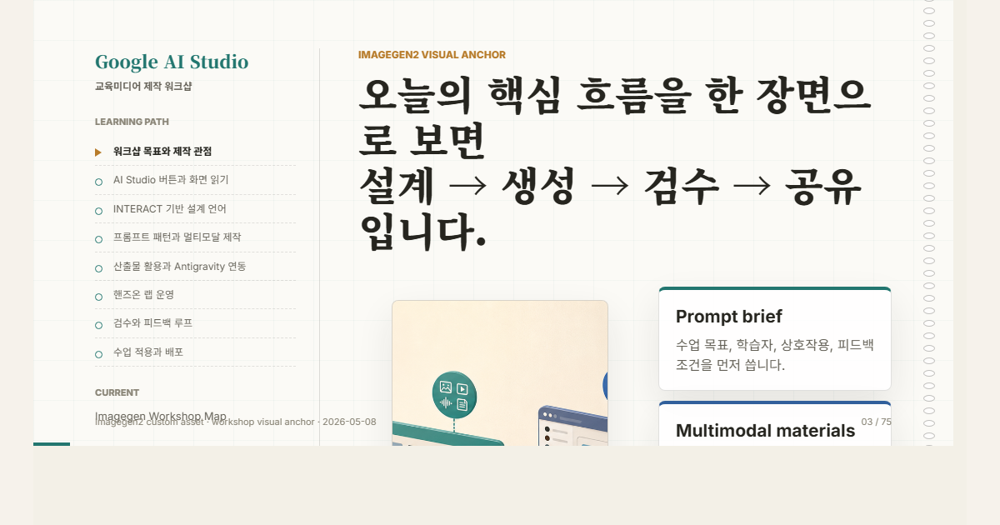
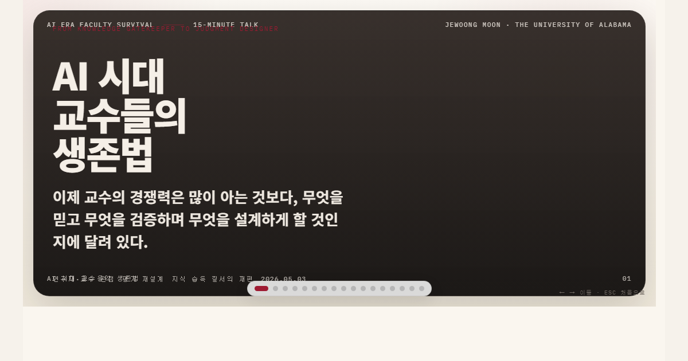

Educatian presentations
Decks for talks, classes, and research-facing storytelling
A curated shelf of published HTML slide decks. Each deck opens as a standalone browser presentation with local assets and shareable thumbnails.

inha-google-ai-studio-educational-media
Google AI Studio로 교육미디어 제작하기
A two-hour Korean faculty webinar deck on AI Studio Build Mode, INTERACT-based prompt/schema design, multimodal testing, classroom app prototyping, quality gates, and Antigravity follow-up workflows.

ai-research-professor-era
AI 시대 교수들의 생존법
A Korean talk deck for faculty workflows in the AI era, covering research loops, governance boundaries, weekly lab routines, practical prompts, and review checklists.